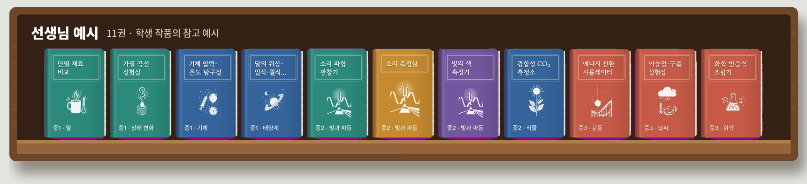
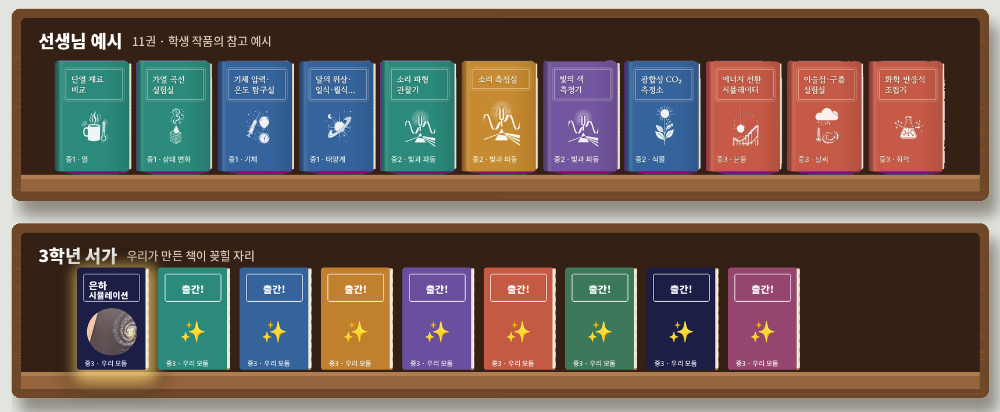

송례중학교 3학년 과학 · STEP 4 출간 + STEP 5 북 페어
우리가 만드는 디지털 과학책
오늘은 드디어 출간하는 날! 작가가 소개하고, 독자가 탐구하는 출간 기념 북 페어

오늘의 순서
출간 기념 북 페어, 이렇게 진행해요
도입 · 5분
완간 축하
학급 책장 공개, 여정 영상 함께 보기
전개 1 · 15~20분
작가와의 만남
모둠 대표 작가가 우리 책을 소개하고 직접 시연
전개 2 · 15분
북 페어
친구 책 3권을 골라 조작하고 리뷰 남기기
정리 · 5분
돌아보기
베스트 리뷰 공유, 나의 여정 돌아보기
오늘의 목표 · 우리 책에 담은 원리와 변인을 근거로 소개하고, 친구의 책을 탐구하며 리뷰를 남겨요.
작가와의 만남
대표 작가 발표 순서
한 팀 2~3분 · 질문 1개
STEP 5 · 북 페어
이제 우리 반 책장으로 가 볼까요?
책장 코드
SOR-2026-RP67
sci-shelf.netlify.app · 책장 코드를 넣으면 우리 반 책장이 열려요
듣는 독자의 미션
발표를 들으며 세 가지를 찾아요
01
원리 찾기
이 책에 담긴 핵심 과학 원리는 무엇일까?
02
변인 찾기
무엇을 다르게 하고, 무엇을 같게 했을까?
03
질문 하나
작가에게 묻고 싶은 질문을 한 가지 준비해요
질문 예시 · “이 조건을 더 크게 바꾸면 결과가 어떻게 될까요?” “Talk Log에서 가장 고민한 결정은 무엇이었나요?”
작가와의 만남 · [ ]모둠
[책 제목]
대표 작가 [필명]
개발자의 의도
누구를 위한 책일까?
[누가, 무엇을 탐구하도록]
핵심 원리
교과서 개념과 맞을까?
[원리 한 줄]
다르게 한 조건
무엇을 바꿔 볼 수 있지?
[조작 변인]
같게 한 조건
공정한 비교일까?
[통제 변인]
관찰 결과
원리가 화면에 보일까?
[무엇이 어떻게 달라지나]
고친 오류 한 가지
AI 실수를 어떻게 찾았지?
[오류 → 고친 방법]
Talk Log로 결정한 것
어떤 대화가 책을 바꿨을까?
[모둠 대화로 정한 핵심 결정 한 가지]
STEP 5 · 북 페어
친구들이 출간한 책을 읽어요
1
우리 반 책장 열기
2
친구 책 3권 골라 직접 조작
3
개념 · 기능 · 알게 된 내용 정리
4
친구의 책 칭찬 리뷰 남기기

책장 코드 SOR-2026-RP67
STEP 1 기획 · 2 집필 · 3 편집과 교정 · 4 출간 · 5 북 페어
완간을 축하합니다!
원리를 담아 직접 쓴 우리의 디지털 과학책 · 마지막으로 나의 여정, Talk Log를 돌아봐요